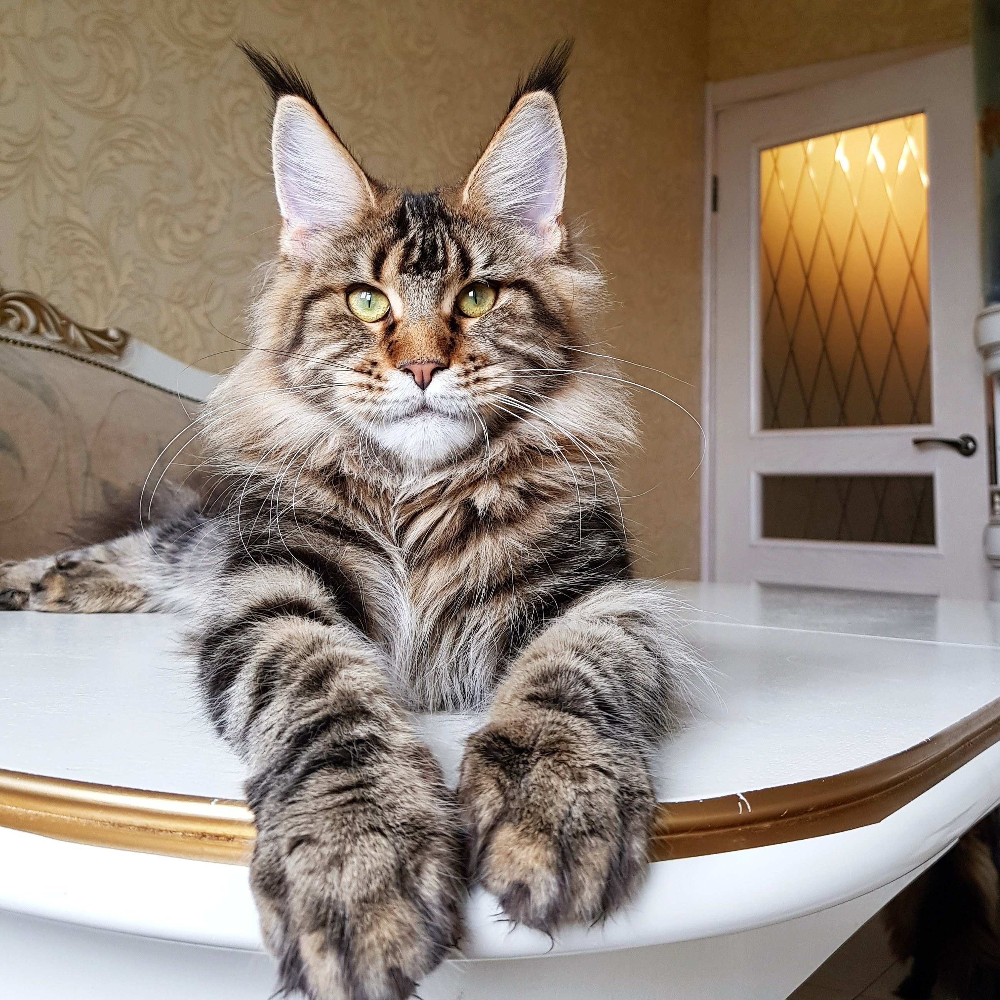

Факт 1
Среди мейн-кунов часто встречаются полидакты Полидактилия – это генная мутация, в результате которой у эмбриона развивается больше пальцев, чем обычно. Это явление встречается не только у животных, но и у людей. И довольно часто оно встречается у мейн-кунов